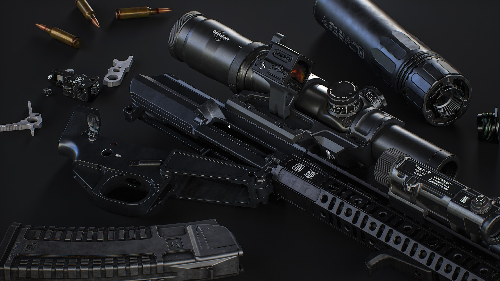
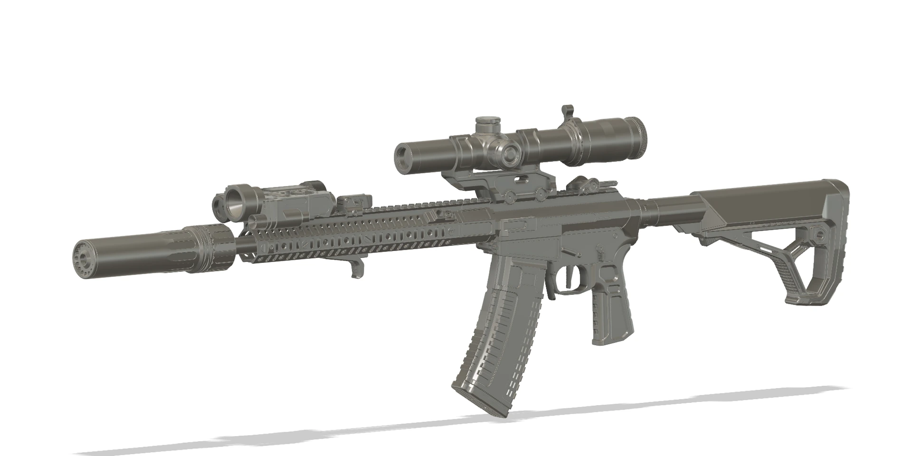

AAA Hard-Surface
AR platform

Project concept
Each component is based on a real production model. I studied examples from several manufacturers to give the game asset a believable configuration.
I modeled each component from scratch using real-world references and treated it as a separate asset. My workflow drew on approaches used by experienced Activision artists who worked on Call of Duty.
Workflow
CAD modeling
I built the high- and mid-poly models in Fusion 360. In ZBrush, I refined the high-poly models with bevels, chips, scratches, and other signs of wear.
Low-poly and UVs
I retopologized the low-poly models in 3ds Max and unwrapped the UVs in RizomUV.
Baking
I baked the maps in Marmoset Toolbag. I spent extra time checking seams, correcting artifacts, and rebaking until the results were clean.
Textures and final renders
I textured the asset in Substance 3D Painter and rendered the final images in Marmoset Toolbag.
Mid-poly model from Fusion 360

Optics


Perst, second generation
I recreated the second-generation Perst from photographs. When I started, the only 3D models I could find were of earlier versions. After I shared the renders, people asked whether they could download or buy the model.


Magazine


Suppressor and body details

Trigger assembly


Topology and UVs


Final render